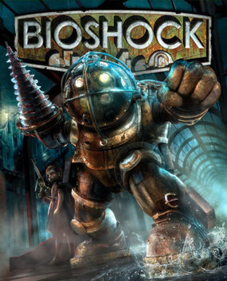
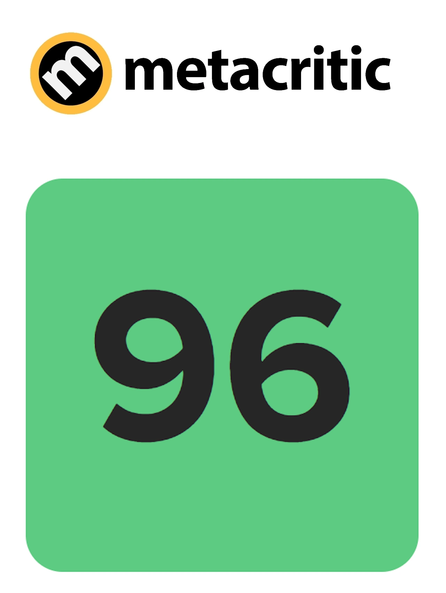
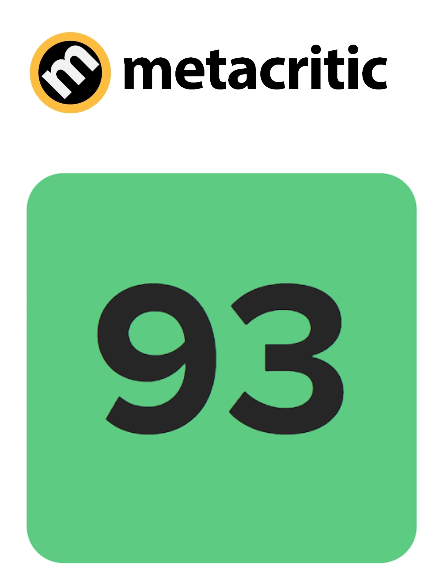
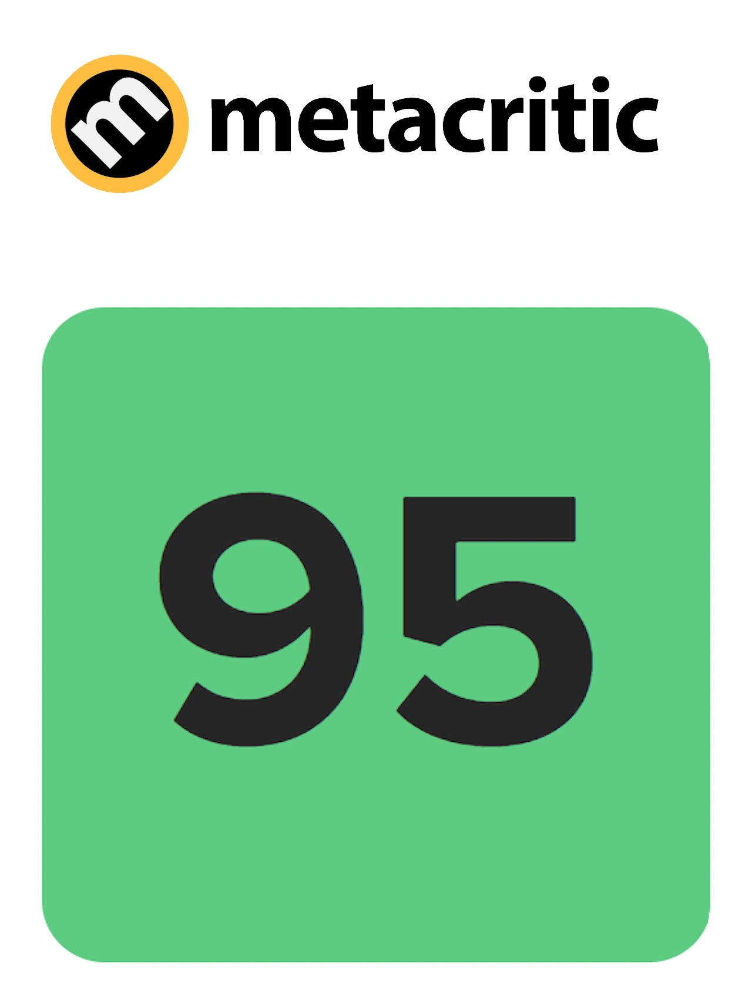

BioShock

Experience the unparalleled world of BioShock, a shooter unlike any other, where you wield an arsenal of weapons and genetically modify your DNA to create an even deadlier weapon: you. With dynamic encounters that ensure no two playthroughs are alike, you'll hack devices, upgrade weapons, and craft new ammo variants to suit your strategy. Explore an incredible art deco world hidden beneath the ocean's surface, where every corner holds secrets waiting to be uncovered.
Wikipedia: BioShock
Wikipedia: BioShock

More pictures
Resident Evil 4

Survival is just the beginning. In Resident Evil 4, six years after the biological catastrophe in Raccoon City, Agent Leon S. Kennedy is dispatched to rescue the president's kidnapped daughter. His search leads him to a secluded European village, where he discovers something sinister lurking among the locals. As the story unfolds, players are thrust into a world of daring rescue and relentless horror, where life and death hang in the balance. With modernized gameplay, a reimagined storyline, and vividly detailed graphics, Resident Evil 4 marks the triumphant return of a genre-defining classic.
Wikipedia: Resident Evil 4
Wikipedia: Resident Evil 4

More pictures

The Last of Us Remasterd
In a ravaged civilization, where infected and hardened survivors run rampant, Joel, a weary protagonist, is hired to smuggle 14-year-old Ellie out of a military quarantine zone. However, what starts as a small job soon transforms into a brutal cross-country journey, where every decision weighs heavy and every encounter is a fight for survival. The Last of Us Remastered brings this gripping tale to life with enhanced graphics, improved performance, and all previously released DLC included.
Wikipedia: The Last of Us Remasterd
Wikipedia: The Last of Us Remasterd
